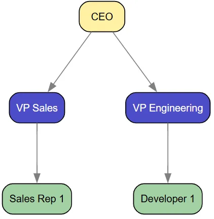
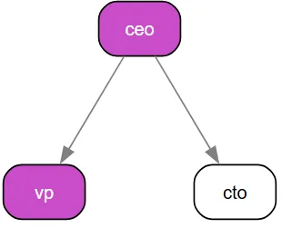
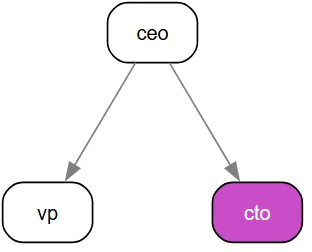
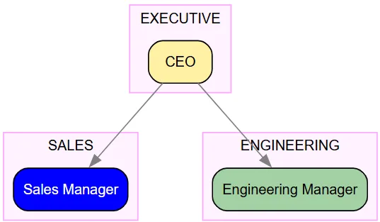
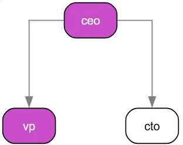
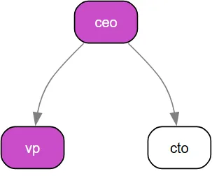
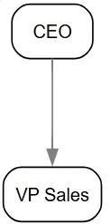
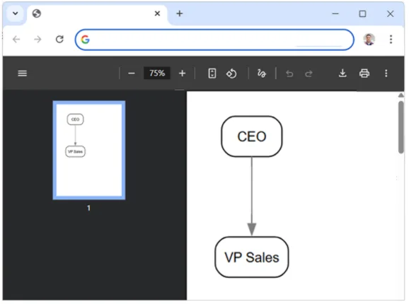
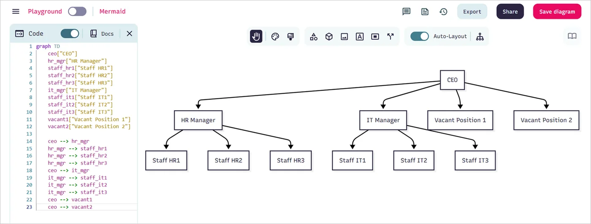

Introducing stzOrgChart - The Strategic Organizational Intelligence Platform
Let's start with the core building blocks. Creating an organizational hierarchy with stzOrgChart is both intuitive and powerful:
par Mansour Ayouni · dans le dépôt depuis le 2025-11-25 · tutoriel · domaine Diagrammes et graphes
Cet article est écrit en anglais, comme la bibliothèque.

In Softanza, understanding organizational structure transcends simple box-and-line diagrams. Organizations need dynamic tools that can model, analyze, and visualize their human infrastructure with precision and depth. Enter stzOrgChart – a revolutionary approach to organizational modeling that transforms static charts into living, analytical systems with governance-aware intelligence.
The Foundation: Position, People, and Department Management
oOrg = new stzOrgChart("Basic_Hierarchy")
oOrg {
SetLayout("TD")
# Add executive position
AddExecutivePositionXT(:ceo, "CEO") # ceo is the ID of the node and CEO it's label
# Add management positions
AddManagementPositionXT(:vp_sales, "VP Sales")
AddManagementPositionXT(:vp_eng, "VP Engineering")
# Set reporting lines
ReportsTo(:vp_sales, :ceo)
ReportsTo(:vp_eng, :ceo)
# Add staff positions with attributes
AddStaffPositionXTT(:sales_rep1, "Sales Rep 1", [:region = "North"])
AddStaffPositionXTT(:dev1, "Developer 1", [:skill = "Backend"])
ReportsTo(:sales_rep1, :vp_sales)
ReportsTo(:dev1, :vp_eng)
View()
}illustration
Output:
Texecutive (yellow), management (blue), and staff positions (green), creating a visually intuitive hierarchy.
NOTE: The colors and everything else are completely configurable, at the gloabl level, to cope with your taste and need, by simply editng this container at the beginning of the stzOrgChart.ring file:
$aOrgColors = [
:board = "gold",
:executive = "gold-", # Lighter gold
:management = "blue+", # Mid-blue
:staff = "green-", # Green
:operations = "blue",
:treasury = "green",
:risk = "orange",
:audit = "purple",
:hr = "pink",
:it = "cyan",
:sales = "blue",
:engineering = "green-",
:focus = "magenta+"
]
People Management with Rich Data
The true power emerges when we add people to positions with rich attribute data:
oOrg = new stzOrgChart("People_Management")
oOrg {
AddPosition("ceo")
AddPosition("vp")
AddPosition("cto")
ReportsTo("vp", "ceo")
ReportsTo("cto", "ceo")
# Add people with data
AddPersonXTT("p1", "John Doe", [:tenure = 5, :performance = "High"])
AddPersonXT("p2", "Jane Smith")
# Assign people to positions
AssignPerson("p1", "ceo")
AssignPerson("p2", "vp")
# Verify assignments and data
? @@NL( People() )
# View with people emphasized
ViewPopulated()
}illustration
Our org chart now is populated and we can check the data about it's people by checking the outpout of the People() method:
[ [ [ "id", "p1" ], [ "name", "John Doe" ], [ "position", "ceo" ], [ "data", [ [ "tenure", 5 ], [ "performance", "High" ] ] ] ], [ [ "id", "p2" ], [ "name", "Jane Smith" ], [ "position", "vp" ], [ "data", [ ] ] ] ]
The ViewPopulated() method instantly shows, in a distinct color, the nodes of the org chart that are populated with persons ("ceo" and "vp") and those who are not (the "cto" node).

NOTE: The magenta color used here to highlight the nodes containing people is configurable in the
$aOrgColorsglobal setting we saw earlier, in particular, by modifying the:focus = "magenta+"line.
Or you can focus on the vacant positions (nodes without people assigned to them) by using ViewVacant() instead of ViewPopulated() and so you get:

Departmental Structure and Clusters
Organizations are naturally compartmentalized into departments, and stzOrgChart models this reality:
oOrg = new stzOrgChart("Department_Management")
oOrg {
# Adding the positions and who reports to whom
AddPositionXT(:ceo, "CEO")
AddPositionXT(:sales_mgr, "Sales Manager")
AddPositionXT(:eng_mgr, "Engineering Manager")
ReportsTo(:sales_mgr, :ceo)
ReportsTo(:eng_mgr, :ceo)
# Adding departments and filling them with positions
AddDepartmentXTT(:exec, "EXECUTIVE", [ :ceo ])
AddDepartmentXTT(:sales, "SALES", [ :sales_mgr ])
AddDepartmentXTT(:eng, "ENGINEERING", [ :eng_mgr ])
# Set position departments
SetPositionDepartment(:ceo, "EXECUTIVE")
SetPositionDepartment(:sales_mgr, "SALES")
SetPositionDepartment(:eng_mgr, "ENGINEERING")
# Verify
? @@NL( Departments() ) + NL
? @@NL( Department("SALES") )
ViewByDepartment()
}illustration
The full content of the departments is returned using Departments()method:
And you can call the data of just a given department using Department(cName) like in Department("SALES") above.
Finally, these departments are automatically reflected on the visual org chart as three clusters, each containing all the nodes assigned to that department. Each cluster appears as a box that encloses the department’s nodes:

NOTE: If the default magenta cluster color isn’t what you prefer, you can change it effortlessly. Just add a line such as
SetClusterColor("gray")before callingView(), and the new color will be applied to all clusters.
You can also set the default cluster color globally by editing the stzDiagram.ring file and assigning:
$cDefaultClusterColor = "gray"
(This will apply the color automatically to all future org charts unless overridden in code.)
The Unified Validation System: Organizational Intelligence at Scale
stzOrgChart implements validation as a multi-level intelligence system. At the organizational level, you get HR-specific validators (BCEAO governance, span of control, succession planning). But because stzOrgChart inherits from stzDiagram (which inherits from stzGraph), you also gain access to domain validators (SOX, GDPR, Banking) and structural validators (DAG, reachability, completeness). This creates a comprehensive validation platform that spans from graph theory to regulatory compliance.
" Quick Start: Default Organizational Validators
Every stzOrgChart comes with five organizational validators out of the box. Let's build a simple bank structure to see them in action:
oBank = new stzOrgChart("International_Bank")
oBank {
SetTheme("pro")
# Build basic structure
AddExecutivePositionXT("board", "Board of Directors")
AddExecutivePositionXT("ceo", "CEO")
AddManagementPositionXT("cfo", "CFO")
AddManagementPositionXT("treasury_head", "Treasury Head")
ReportsTo("ceo", "board")
ReportsTo("cfo", "ceo")
ReportsTo("treasury_head", "cfo")
# What validators are active?
? "Default validators:"
? @@NL( Validators() )
}illustration
Output:
Default validators: [ "bceao", "sod", "soc", "vacancy", "succession" ]
illustration
Reading this: Your org chart automatically checks for West African banking compliance (BCEAO), segregation of duties (SOD), span of control (SOC), vacant positions, and succession planning. These are organizational concerns—exactly what HR and governance teams need.
Boolean Validation: Quick Health Checks
The fastest way to check organizational health is with boolean validation. This gives you instant red-light/green-light indicators:
oBank {
# Quick compliance check
? "Overall organizational health:"
? IsValid()
}illustration
Output:
Overall organizational health: 0
illustration
Reading this: 0 means FALSE—at least one validator failed. The organization has issues that need attention. This is perfect for dashboards or automated alerts where you need instant status.
Detailed Validation: Understanding the Problems
When validation fails, you need to know what's wrong and where. That's what detailed validation provides:
oBank {
? "Detailed analysis:"
? @@NL( Validate() )
}illustration
Output (excerpt):
[
[ "status", "fail" ],
[ "validatorsrun", 5 ],
[ "validatorsfailed", 2 ],
[ "totalissues", 10 ],
[ "results", [
[
[ "status", "fail" ],
[ "domain", "vacancy" ],
[ "issuecount", 4 ],
[ "issues", [ "Vacant positions: 4" ] ],
[ "affectednodes", [ "board", "cfo", "treasury_head", "ceo" ] ]
],
[
[ "status", "fail" ],
[ "domain", "succession" ],
[ "issuecount", 6 ],
[ "issues", [
"No successor: ceo",
"No successor: cfo",
"No successor: treasury_head"
]],
[ "affectednodes", [ "ceo", "cfo", "treasury_head" ] ]
]
]],
[ "affectednodes", [ "board", "cfo", "treasury_head", "ceo" ] ]
]illustration
Reading this: The report tells you:
- 2 of 5 validators failed
- 10 total issues found across the organization
- Vacancy validator found 4 empty positions
- Succession validator found 3 positions without backups
- The affectedNodes array lists every problematic position
This is what auditors and analysts need—specific problems with evidence.
Visual Validation: Seeing Problems in Context
The affectedNodes array enables direct visualization. Let's add the missing validation→view bridge methods and use them:
# stzOrgChart - Add these methods to enable visual validation
def ViewValidation(aValidationResult)
# Extract affected nodes and apply focus
if HasKey(aValidationResult, :affectedNodes)
This.ApplyFocusTo(aValidationResult[:affectedNodes])
ok
This.View()
def ViewXT(pcValidator)
# Validate and view in one action
aResult = This.ValidateXT(pcValidator)
This.ViewValidation(aResult)illustration
Now validation and visualization become seamless:
oBank {
# Assign some people to reduce vacancy issues
AddPersonXT("p1", "Alice Chen")
AddPersonXT("p2", "Bob Kumar")
AssignPerson("p1", "ceo")
AssignPerson("p2", "cfo")
# View succession risks directly
ViewXT(:Succession)
}illustration
This opens your org chart with the three positions lacking successors highlighted in magenta (the default focus color). No intermediate steps—validation flows directly into visualization.
Single Validator Deep Dive
Sometimes you need to focus on one specific concern. The XT suffix (extended) provides both boolean and detailed validation for individual validators:
oBank {
? "Is span of control acceptable?"
? IsValidXT(:SOC)
? NL + "Succession planning details:"
? @@NL( ValidateXT(:Succession) )
}illustration
Output:
Is span of control acceptable?
1
Succession planning details:
[
[ "status", "fail" ],
[ "domain", "succession" ],
[ "issuecount", 6 ],
[ "issues", [
"No successor: ceo",
"No successor: cfo",
"No successor: treasury_head"
]],
[ "affectednodes", [ "ceo", "cfo", "treasury_head" ] ]
]illustration
Reading this: Span of control passes (1 = TRUE)—no manager is overloaded. But succession planning fails—three critical positions have no designated backups. The affectedNodes array identifies exactly which positions are at risk.
Multi-Validator Analysis: Comparative Auditing
For comprehensive audits, run multiple validators simultaneously:
oBank {
SetPositionDepartment("treasury_head", "treasury")
# Compare two compliance frameworks
? "Banking vs BCEAO compliance:"
? @@NL( ValidateXT([ :Banking, :BCEAO ]) )
}illustration
Output:
[
[ "status", "pass" ],
[ "validatorsrun", 2 ],
[ "validatorsfailed", 0 ],
[ "totalissues", 0 ],
[ "results", [
[
[ "status", "pass" ],
[ "domain", "banking" ],
[ "issuecount", 0 ],
[ "issues", [ ] ]
],
[
[ "status", "pass" ],
[ "domain", "BCEAO_governance" ],
[ "issuecount", 0 ],
[ "issues", [ ] ]
]
]]
]illustration
Reading this: Both validators passed. The organization satisfies universal banking controls (fraud prevention, dual control) AND West African regulatory requirements (governance structure, audit independence). The aggregated report shows you passed 2 of 2 validators with zero total issues.
Understanding Validator Scope: Banking vs BCEAO
These two validators check different concerns:
oBank {
? "═══ BANKING VALIDATOR ═══"
? "Scope: Universal operational controls"
? "Focus: Fraud prevention, dual control, IT security"
? @@NL( ValidateXT(:Banking) )
? NL + "═══ BCEAO VALIDATOR ═══"
? "Scope: West African banking zone regulations"
? "Focus: Governance structure, board composition, audit independence"
? @@NL( ValidateXT(:BCEAO) )
}illustration
Banking validates operational controls that apply globally—fraud detection, payment approval processes, IT segregation. BCEAO validates governance structures required in the West African Economic and Monetary Union—board presence, audit reporting lines, risk management functions. Both are essential but check different layers of the organization.
Custom Validator Sets: Regional Compliance
Override the defaults to focus on specific requirements:
oBank {
? "Original defaults:"
? @@NL( Validators() )
# Bank in BCEAO region needs both governance and operational controls
SetValidators([ :BCEAO, :Banking, :SOD, :SOC ])
? NL + "Custom validators for BCEAO region:"
? @@NL( Validators() )
? NL + "Running IsValid() with custom set:"
? IsValid()
}illustration
Output:
Original defaults: [ "bceao", "sod", "soc", "vacancy", "succession" ] Custom validators for BCEAO region: [ "bceao", "banking", "sod", "soc" ] Running IsValid() with custom set: 1
illustration
Reading this: You've replaced the default organizational validators with a custom set focused on regulatory compliance. Now IsValid() runs only these four validators. The result (1 = TRUE) means your bank passes all regional requirements.
Inherited Power: Domain Validators from stzDiagram
Because stzOrgChart inherits from stzDiagram, you can run workflow and compliance validators originally designed for business processes:
oBank {
# Add operational workflow properties
SetNodeProperty("treasury_head", "domain", "financial")
SetNodeProperty("treasury_head", "requiresApproval", 1)
# Run diagram-level validators on org structure
? "SOX compliance (from stzDiagram):"
? @@NL( ValidateXT(:SOX) )
? NL + "GDPR compliance (from stzDiagram):"
? @@NL( ValidateXT(:GDPR) )
}illustration
Output:
SOX compliance (from stzDiagram):
[
[ "status", "pass" ],
[ "domain", "sox" ],
[ "issuecount", 0 ],
[ "issues", [ ] ]
]
GDPR compliance (from stzDiagram):
[
[ "status", "pass" ],
[ "domain", "gdpr" ],
[ "issuecount", 0 ],
[ "issues", [ ] ]
]illustration
Reading this: Your org chart passes Sarbanes-Oxley (financial controls) and GDPR (data protection) requirements. These validators come from the parent stzDiagram class but work seamlessly on organizational structures. This is the power of inheritance—you get three validation levels in one object.
Structural Intelligence: Graph Validators from stzGraph
Go deeper still—validate the mathematical structure of your organization using graph theory validators from stzGraph:
oBank {
# Check structural integrity
? "DAG validation (from stzGraph):"
? @@NL( ValidateXT(:DAG) )
? NL + "Reachability validation (from stzGraph):"
? @@NL( ValidateXT(:Reachability) )
}illustration
Output:
DAG validation (from stzGraph):
[
[ "status", "pass" ],
[ "domain", "dag" ],
[ "issuecount", 0 ],
[ "issues", [ ] ],
[ "affectednodes", [ ] ]
]
Reachability validation (from stzGraph):
[
[ "status", "pass" ],
[ "domain", "reachability" ],
[ "issuecount", 0 ],
[ "issues", [ ] ],
[ "affectednodes", [ ] ]
]illustration
Reading this: Your org chart is a DAG (Directed Acyclic Graph)—no circular reporting relationships exist. All positions are reachable—every employee has a path to the board. These are structural guarantees that prevent organizational pathologies like reporting loops or isolated islands.
Practical Workflow: Regional Bank Audit
Here's how a real compliance audit might flow:
oBank = new stzOrgChart("Regional_Bank_Audit")
oBank {
SetTheme("pro")
SetTitleVisibility(TRUE)
# Build structure...
AddExecutivePositionXT("board", "Board of Directors")
AddExecutivePositionXT("ceo", "CEO")
AddManagementPositionXT("cro", "Chief Risk Officer")
AddManagementPositionXT("cao", "Chief Audit Officer")
ReportsTo("ceo", "board")
ReportsTo("cro", "ceo")
ReportsTo("cao", "board") # BCEAO requirement: audit→board
SetPositionDepartment("cro", "risk")
SetPositionDepartment("cao", "audit")
# Assign people
AddPersonXT("p1", "Alice Chen")
AddPersonXT("p2", "Bob Kumar")
AssignPerson("p1", "ceo")
AssignPerson("p2", "cao")
# AUDIT WORKFLOW
? BoxRound("REGULATORY COMPLIANCE AUDIT")
# Step 1: Quick check
if IsValidXT([ :Banking, :BCEAO ])
? "✓ Compliant with both Banking and BCEAO standards"
else
? "✗ Non-compliant - running detailed analysis..."
aAudit = ValidateXT([ :Banking, :BCEAO ])
? @@NL( aAudit )
? NL + "Audit Summary:"
? " Validators run: " + aAudit[:validatorsRun]
? " Failed: " + aAudit[:validatorsFailed]
? " Total issues: " + aAudit[:totalIssues]
? " Affected positions: " + len(aAudit[:affectedNodes])
# Step 2: Visual inspection
? NL + "Generating visual report..."
ViewValidation(aAudit)
ok
}illustration
This workflow gives you: 1. Instant status (boolean check) 2. Detailed evidence (full report) 3. Visual inspection (highlighted org chart)
All in a few lines of code.
The Complete API Reference
Boolean validation (fast status checks):
IsValid() # Run default validators → 0 or 1 IsValidXT(pcValidator) # Single validator → 0 or 1 IsValidXT([v1, v2, ...]) # Multiple validators → 0 or 1
illustration
Detailed validation (analysis & evidence):
Validate() # Full report with defaults → hashlist ValidateXT(pcValidator) # Single detailed report → hashlist ValidateXT([v1, ...]) # Aggregated multi-report → hashlist
illustration
Visual validation (immediate visualization):
ViewValidation(aResult) # View with pre-computed validation ViewXT(pcValidator) # Validate + view in one action
illustration
Configuration:
Validators() # See current defaults → list SetValidators(aList) # Override defaults DefaultValidators() # See class-level defaults → list
illustration
Available Validators by Level
Organizational (stzOrgChart):
- :BCEAO - West African banking governance
- :SOD / :SegregationOfDuties - Conflict of interest prevention
- :SOC / :SpanOfControl - Manager overload detection
- :Vacancy - Staffing gap analysis
- :Succession - Continuity risk assessment
Domain (stzDiagram - inherited):
- :SOX - Sarbanes-Oxley compliance
- :GDPR - Data protection compliance
- :Banking - Universal banking controls
Structural (stzGraph - inherited):
- :DAG - Directed acyclic graph validation
- :Reachability - Connectivity analysis
- :Completeness - Decision path validation
Why This Unifie Validation System Matters
Traditional org chart tools show structure. Softanza's stzOrgChart provides intelligence:
- Prevention - Structural validators catch organizational pathologies before they manifest
- Detection - Domain validators identify compliance gaps before audits
- Evidence - Every validation returns specific affected nodes with issue counts
- Visualization - Problems appear in organizational context, not abstract reports
- Scalability - Same API works for 10-person startups and 10,000-person enterprises
The unified validation system transforms org charts from static diagrams into strategic intelligence platforms that predict, prevent, and document organizational health.
Simulation and Scenario Planning
Perhaps the most strategic feature of stzOrgChart is its ability to simulate organizational changes before implementing them in reality:
# Create baseline snapshot
? CreateSnapshot("Initial")
# Define reorganization changes
aChanges = [
[:type = "change_reporting", :subordinate = "vp2", :supervisor = "vp1"],
[:type = "add_position", :id = "new_pos", :title = "New Position"],
[:type = "remove_position", :position = "vp1"]
]
# Analyze impact
? SimulateReorganization(aChanges)illustration
The simulation engine quantitatively analyzes the impact of proposed changes on key organizational metrics:
[
[
"before",
[
[ "spanofcontrol", 2 ],
[ "vacancyrate", 100 ]
]
],
[
"after",
[
[ "spanofcontrol", 0 ],
[ "vacancyrate", 100 ]
]
],
# Detailed changes applied
]illustration
This enables data-driven decision making for restructuring initiatives, merger integrations, and strategic realignments.
Technical Power: Graph Theory Meets Business Intelligence
Under the hood, stzOrgChart leverages advanced graph theory algorithms inherited from its parent class stzGraph.
These capabilities enable sophisticated analyses like: - Identifying communication bottlenecks that slow decision-making - Detecting single points of failure in critical functions - Optimizing organizational depth to balance control and agility - Quantifying influence networks beyond formal reporting lines
Let's see some of them by example :
oOrg = new stzOrgChart("Graph_Analysis")
oOrg {
AddPosition("a")
AddPosition("b")
AddPosition("c")
AddPosition("d")
AddPosition("e")
ReportsTo("b", "a")
ReportsTo("c", "b")
ReportsTo("d", "c")
ReportsTo("e", "a") # Parallel branch
# Cyclic check (no cycle)
? CyclicDependencies() # FALSE
# Add cycle
ReportsTo("a", "d") # Creates cycle a->b->c->d->a
? CyclicDependencies() # TRUE
# Remove cycle for further tests
Disconnect("a", "d")
? CyclicDependencies() #--> FALSE
# Connected components
? @@( ConnectedComponents() ) # [["a", "b", "c", "d", "e"]]
# Articulation points (removal increases components)
? @@( ArticulationPoints() ) #--> [ "a", "d" ]
# Betweenness centrality
? BetweennessCentrality("b") #--> 0.25
# Closeness centrality
? ClosenessCentrality("a") #--> 0.57
# Diameter (longest shortest path)
? Diameter() #--> 4
# Average path length
? AveragePathLength() #--> 2
# Clustering coefficient
? ClusteringCoefficient("a") #--> 0 Low since branches don't connect
}illustration
NOTE: To get a detailed idea about the powerful features you can get for stzGraph, right inside your
stzOrgChartobjects, read this article.
11. Rule-Based Programming in stzOrgChart
Because stzOrgChart inherits directly from stzGraph, it has access to the complete Softanza rule engine — one of the sophisticated features in the library.
Rules transform a static org chart into a live, self-validating governance system. You encode your organization's policies once, and the chart continuously monitors itself.
oOrg = new stzOrgChart("RuleGoverned")
oOrg {
# Only one root allowed
When( len(DependencyFreeNodes()) > 1 )
AddAnomaly("ORG-001: Multiple root nodes – only Board or CEO may be root")
# BCEAO/Basel III – Risk Officer must report directly to Board or CEO
WhenNodeExists("dir_risk")
if not ( ReportsDirectlyTo("dir_risk", "board") or ReportsDirectlyTo("dir_risk", "ceo") )
AddAnomaly("RISK-001: Chief Risk Officer must report to Board or CEO")
ok
# Internal HR policy – every manager must have at least 3 direct reports
WhenNodeHasAttribute(:level, "management")
if NumberOfDirectReports( This.CurrentNode() ) < 3
AddAnomaly("HR-012: Manager " + This.CurrentNode() + " has insufficient span of control")
ok
# Sales department minimum staffing policy
WhenDepartmentExists("Sales")
if PositionsInDepartment("Sales").len() < 6
AddAnomaly("SALES-001: Sales department below minimum required headcount")
ok
# Show results
? "CUSTOM RULE Anomalies:"
? @@NL( Anomalies() )
ShowAnomalies() # highlights offending nodes in red
}illustration
Rules are evaluated instantly after every structural change. They perfectly complement the built-in Validate(:BCEAO), Validate(:SpanOfControl), etc., giving you unlimited domain-specific governance.
12. Knowledge-Oriented Programming (KOP) With stzOrgChart
By combining stzOrgChart with stzKnowledgeGraph classes, yet an other powerful class of the Softanza Graph Module, the organizational structure becomes a full semantic knowledge engine you can query in near-natural business language.
oKG = new stzKnowledgeGraph("BankSemantics")
oKG {
# Facts derived from the org chart (can be auto-generated in future versions) #TODO Make them now!
AddFact("ceo", :IsA, "ExecutivePosition")
AddFact("dir_risk", :IsA, "ControlFunction")
AddFact("vp_sales", :ReportsTo, "ceo")
AddFact("vp_sales", :InDepartment,"Sales")
AddFact("vp_sales", :Criticality, "High")
AddFact("p_fatou", :Holds, "vp_sales")
AddFact("p_fatou", :HasSkill, "RevenueGrowth")
AddFact("p_fatou", :Tenure, 8)
# Ontology
DefineClass("ControlFunction", "Position")
DefineClass("ExecutivePosition", "Position")
# Business-oriented queries
? "Who reports directly to the CEO?"
? @@( Query(["?who", :ReportsTo, "ceo"]) )
? "Which positions are Control Functions?"
? @@( Query(["?pos", :IsA, "ControlFunction"]) )
? "Who has tenure > 5 years and holds a critical role?"
? @@( Query(["?person", :Tenure, "?years"]) ) # then filter in Haro if needed
? "Roles similar to VP Sales (shared predicates)"
? @@NL( SimilarTo("vp_sales") )
}illustration
The fusion of structural graph + semantic triples delivers hybrid intelligence: graph algorithms reveal bottlenecks, KOP explains why they matter from a business perspective.
Visual Plasticity: Configuring the OrgChart Appearance
Most of the smart defaults provided by stzOrgChart are already optimized for clarity and consistency, and in many cases you won’t need to change anything. Still, every aspect is customizable—either at the stzOrgChart level or at its parent class stzDiagram, which provides a rich visual foundation.
As demonstrated earlier, you can customize global values such as:
- The list of organizational colors via the global
$aOrgColors - The default cluster color via
$cDefaultClusterColor - And many additional visual parameters
We also saw how to apply a specific cluster color only to the current org chart using SetClusterColor(). Following the same approach, you can personalize many other visual aspects:
SetEdgeColor("blue-")SetLayout(:LeftRight)- …and more.
Choosing the spline style (edge style)
You can also choose the type of splines (edge drawing style) to use:
SetSplines("ortho")– orthogonal step-like connectorsSetSplines("splines")– smooth direct arrows (the default style used in previous visuals)- Other options include:
"line","polyline","curved", etc.
Example: Switching to Orthogonal Splines
Here is one of our previous examples, revisited to use the orthogonal spline style:
oOrg = new stzOrgChart("People_Management")
oOrg {
SetSplines("ortho") # Other options: splines, line, polyline, curved, etc.
AddPosition("ceo")
AddPosition("vp")
AddPosition("cto")
ReportsTo("vp", "ceo")
ReportsTo("cto", "ceo")
# Add people with data
AddPersonXTT("p1", "John Doe", [:tenure = 5, :performance = "High"])
AddPersonXT("p2", "Jane Smith")
# Assign people to positions
AssignPerson("p1", "ceo")
AssignPerson("p2", "vp")
# Verify assignments and data
? @@NL( People() )
# View with people emphasized
ViewPopulated()
}illustration
The org chart now turns orthogonal:

Switch to:
SetSplines("curved")illustration
and you get a curved connector style:

Beyond These Options
These examples represent only a small portion of what’s possible, because stzOrgChart inherits all customization capabilities from the powerful stzDiagram class.
Anything you can visually configure in stzDiagram can also be applied directly to stzOrgChart.
For more information on the stzDiagram class, refer to the dedicated article: #TODO
Business User Accessibility: Beyond Programming
stzOrgChart bridges the gap between technical and business users through its dedicated .stzorg file format. Business users can edit organizational structures directly in text files without writing code:
orgchart "Banking Structure"
positions
ceo
title: CEO
level: executive
department: executive
reportsTo: board
vp_sales
title: VP Sales
level: management
department: sales
reportsTo: ceo
people
p1
name: Ali Mamane
data: {tenure: 5, performance: "High"}
p2
name: Salimatou Touré
assignments
p1 -> ceo
p2 -> vp_sales
departments
sales
name: Sales Department
positions: ["vp_sales", "sales_mgr1", "sales_mgr2"]
Loading this structure from the text file and visualizing it requires minimal code:
oOrgChart = new stzOrgChart("Imported_Org")
oOrgChart {
Import("banking_structure.stzorg")
View()
}illustration

Now, all the stzOrgChart features are accessible by code, and you can edit the text file again to change the org chart structure, and then load it again. This accessibility makes organizational intelligence available to all stakeholders, not just technical teams.
Generating your Org Chart File
stzOrgChart can generate your organizational chart in multiple formats—images (PNG, JPEG), vector files (SVG, PDF), and any other format supported by the Graphviz DOT engine used internally to render the graph.
Exporting is as simple as calling SetOutput(cFormat):
oOrgChart = new stzOrgChart("Imported_Org")
oOrgChart {
Import("banking_structure.stzorg")
SetOutput("PDF") # SVG is the default form.
View()
}illustration
This produces a PDF file that opens automatically in your browser or your system’s default PDF viewer:

In practice, you can choose your export format based on your needs:
- SVG — Ideal for interactive web applications and scalable visuals
- PDF — Best for formal documents, reports, and printing
- PNG or other bitmap formats — Useful for presentations, slides, and email sharing
Exporing the orgchart
Mermaid and others

Softanza Advantage: Why stzOrgChart Outperforms the Competition
The landscape of organizational charting tools is crowded with solutions that focus primarily on visualization. However, stzOrgChart stands apart by delivering a complete organizational intelligence platform that integrates governance, analytics, and simulation capabilities in a uniquely accessible architecture. The following comparison demonstrates why Softanza's approach represents the future of organizational design:
| Feature Category | Softanza stzOrgChart (Haro) | D3.js/OrgChart JS (JavaScript) | Visio/Lucidchart (GUI Tools) | NetworkX (Python) | Enterprise HRIS Platforms |
|---|---|---|---|---|---|
| Core Architecture | Layered system (stzGraph; stzKnwoledgeGraph, stzDiagram, stzOrgChart) with analytical rulebased dimensions | Visualization-focused libraries with limited analytics | Static diagramming with minimal data integration | Graph algorithms without business context | Monolithic systems with rigid structures |
| Governance Validation | ✅ Built-in frameworks (BCEAO, SOX, ISO) with automatic issue detection | ❌ Manual implementation required | ⚠️ Visual templates only, no validation logic | ❌ Requires custom implementation | ✅ Pre-built compliance but inflexible and costly |
| Simulation Engine | ✅ Quantitative impact analysis of org changes with metric tracking | ❌ No native capabilities | ❌ No simulation capabilities | ⚠️ Possible with custom code, no business context | ⚠️ Limited scenario modeling at high cost |
| Analysis Layers | ✅ Performance, Risk, Compliance, Succession layers with toggle capability | ❌ Single-dimension visualization | ❌ No layered analytics | ❌ Requires complex integration | ⚠️ Separate modules that don't integrate well |
| Data Integration | ✅ Unified model combining positions, people, departments, and attributes | ⚠️ Requires external data binding | ⚠️ Limited data capabilities | ✅ Strong data handling but weak visualization | ✅ Comprehensive data but poor visualization |
| User Accessibility | ✅ Business-friendly .stzorg format + programmer API |
❌ Code-intensive for non-developers | ✅ Drag-and-drop interface but limited analytics | ❌ Requires programming expertise | ✅ Business interface but limited customization |
| Graph Analytics | ✅ Built-in centrality, connectivity, and cycle detection | ⚠️ Possible with extensions | ❌ No native graph algorithms | ✅ Rich algorithm library but visualization challenges | ❌ Limited or no graph theory implementation |
| Deployment Model | ✅ Desktop, web, or embedded in enterprise applications | ✅ Web-focused only | ⚠️ Cloud or desktop with limitations | ✅ Research/analysis environment | ❌ Cloud-only with vendor lock-in |
| Customization | ✅ Open architecture with extensible rule system | ✅ Developer-customizable but complex | ❌ Limited to vendor-provided features | ✅ Highly customizable but steep learning curve | ❌ Minimal customization without expensive services |
| Total Cost of Ownership | ✅ One-time development with no recurring fees | ✅ Free libraries but high development cost | ⚠️ Subscription fees with limited functionality | ✅ Free but requires specialized skills | ❌ $50K-$500K+ implementation with annual fees |
| Time to Value | ✅ Days to weeks for complete implementation | ⚠️ Weeks to months for full solution | ✅ Hours for basic charts, months for analytics | ⚠️ Months for non-technical teams | ❌ 6-18 months implementation cycles |
Key Differentiators That Matter
-
The Integrated Intelligence Approach: Unlike visualization-only tools (D3.js, Visio), stzOrgChart treats organizational structure as a living analytical system. It allows leaders to toggle between compliance views, risk heatmaps, and succession planning perspectives without rebuilding charts from scratch.
-
Governance as Code: While enterprise HRIS platforms bury compliance rules in configuration menus, stzOrgChart exposes governance standards as programmable validations. This enables version control, automated testing, and continuous compliance monitoring—capabilities unavailable in static diagramming tools.
-
Simulation-First Mindset: Most organizational tools present a snapshot in time. stzOrgChart's simulation engine quantifies the impact of proposed changes on span of control, vacancy rates, and risk exposure before decisions are made—turning reorganization from guesswork into engineering.
-
Business-Technical Bridge: The
.stzorgfile format eliminates the traditional divide between business analysts and developers. HR professionals can edit organizational structures in plain text while developers build sophisticated analytics on the same foundation—a duality impossible in pure GUI tools or academic graph libraries. -
Total Ownership Cost: Enterprise platforms charge premium prices for features that stzOrgChart delivers with elegant simplicity. Organizations avoid vendor lock-in while maintaining complete control over their organizational data and intelligence workflows.
This isn't just organizational charting—it's organizational engineering with full strategic ownership.
Conclusion: The Strategic Value of Organizational Intelligence
stzOrgChart represents far more than a diagramming tool—it's a strategic intelligence platform that transforms how organizations understand and optimize their human infrastructure. By integrating graph theory, governance frameworks, simulation capabilities, and multi-dimensional visualization, stzOrgChart enables leaders to:
- Quantify organizational health through validated metrics rather than intuition
- Simulate restructuring impacts before committing resources to change
- Identify hidden risks in reporting structures and succession planning
- Ensure regulatory compliance through automated governance validation
- Optimize decision-making velocity by analyzing communication pathways
- Visualize complex relationships through layered analytical perspectives
Whether you're an HR executive evaluating talent pipelines, a compliance officer ensuring regulatory adherence, a restructuring consultant optimizing spans of control, or a CEO planning digital transformation, stzOrgChart provides the analytical foundation for making confident, data-driven decisions about your organization's most valuable asset—your people.
Lectures liées
- stzGraph: The Art of Connected Thinking
- Intelligence in Motion: Graph Planning in Softanza
- stzGraph — Modeling Knowledge Through Structure
- Organizational Intelligence in Action
Citer
Mansour Ayouni. « Introducing stzOrgChart - The Strategic Organizational Intelligence Platform ». Softanza narrations, 2025. https://mayouni.github.io/stzsite/fr/narrations/stzorgchartdoc.html
Non exécuté : son code touche aux fichiers, au réseau, à l'horloge ou au hasard. L'article est publié tel qu'il est écrit ; ses blocs sont des illustrations. Le code des articles est du code Haro. Là où un article a été écrit avant que la langue prenne son nom actuel, le nom a été changé et rien d'autre. Genre, domaine et série lus dans le nom du fichier, année tirée du premier commit : dérivés, jusqu'à ce que l'article porte son propre en-tête. Le fichier sur GitHub(s'ouvre dans un nouvel onglet)